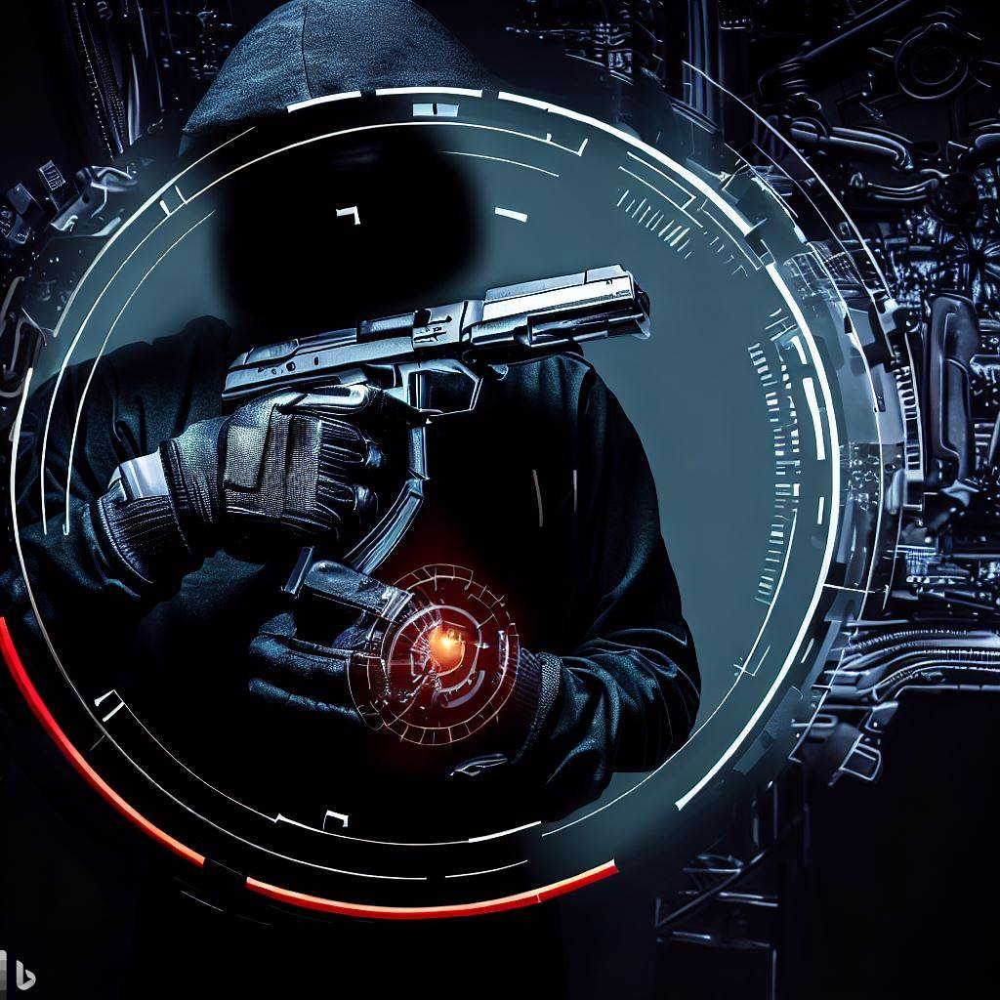
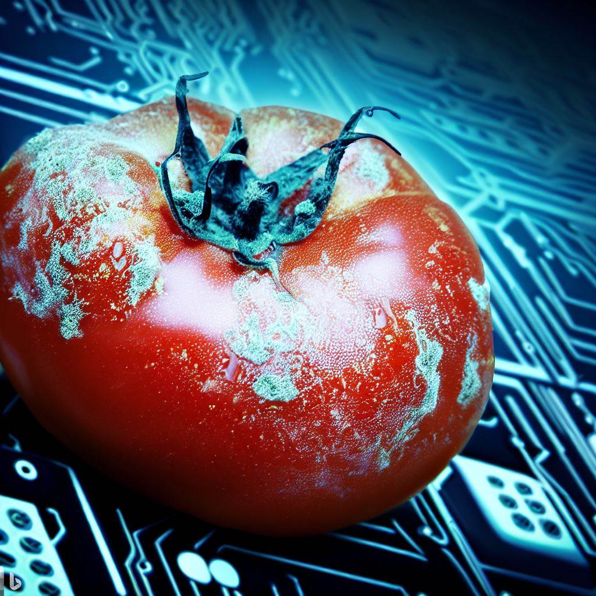
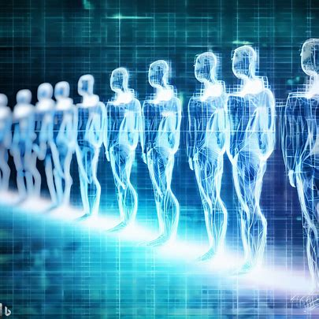
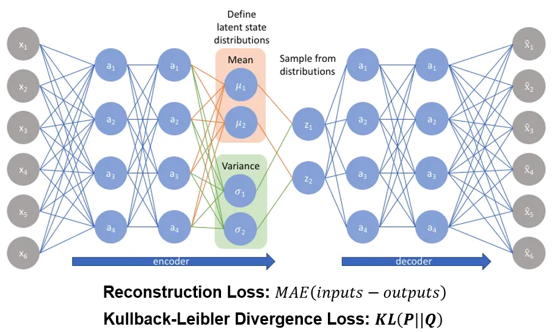
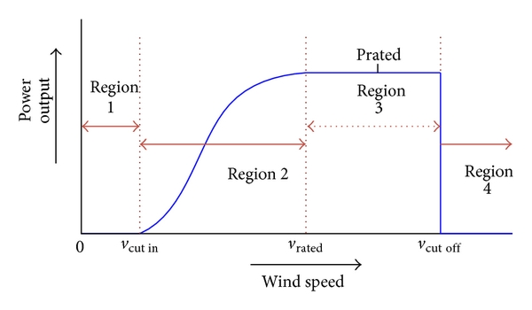

Data Science Projects 🤖
Mutations in the m6A RNA methylation pathway have been linked to various diseases such as cancer.
This genomics project aims to detect m6A mutations on cell lines using RNA sequencing data, taken from the SG-NEx Project.
The data comes in the form of electrical current which are recorded when strands of RNA enter a tiny pore in the measuring device.

Since the data is in the form of a multiple-instance learning (MIL) problem where labels are only available for each read (bag) instead of individual nucleotides (instances), this formulates the problem as a weakly supervised learning problem.
The project involves the use of a deep learning model to classify reads into two classes: m6A and non-m6A.
The model we built was a random forest model that takes in several quantiles of each instance-level feature as inputs.
These quantiles form the bag-level features, and act as summary statistics of each feature to represent the entire bag.
Fortunately, our team was able to achieve the 3rd best model performance amongst all teams in terms of ROC-AUC score! 😀
More information about our approach can be found in this report, as well as this YouTube video.
You can also find the trained model on my DockerHub repository.
Skills: Genomics, Multiple Instance Learning, Random Forests, AWS, Shell Scripting (Linux), Docker

This was a project under one of my Co-Curricular Activities (CCA) from NUS called NUS MedTech.
The project is named "Project Morphine" and involves building a wearable fall detection device to detect falls in elderly persons.
As you might have guessed, this project's interdisciplinary nature brought together students from the biomedical engineering major, computer science major, and data science major (that's me!) together.
Under the data science team which consists of two members, I was directly involved in the entire data science lifecycle for this project - from data collection, data cleaning, exploratory data analysis, model building, model evaluation, and deployment.
Our initial prototype garnered the Gold award from the Biomedical Engineering Society (BES) design competition.
Skills: Anomaly Detection, Variational Autoencoders, Autoencoders, Tensorflow, Docker, Google Firebase

As prospective university students in Singapore finish their A levels or diploma, it can be extremely confusing and difficult to decide which university to enrol in.
Some local universities do not publish module information publicly online, which further adds to the dilemma.
This project aims to help students interested in data science to choose which local university they should consider based on their career interests.
These recommendations also take into account the skills demanded by the job market today using an automated web scraper for JobStreet and MyCareersFuture.
From scraping job description information from job posting sites, to prompt engineering for generating data using ChatGPT (when ChatGPT was first released), all the way to leveraging Named Entity Recognition (NER) and Word2Vec models and more, this project displays a wide spectrum of tools & techniques used throughout different stages of the data science lifecycle.
Skills: Web Scraping (Selenium), Natural Language Processing (NLP), Named Entity Recognition (NER) models, Word Vectorizer models (Word2Vec, TFIDF), ChatGPT, SpaCy, NLTK, Gensim, Unit Testing, Docker

With gun-related crimes on the rise, this project aims to develop a weapon detection system to classify images into three categories: Normal (no weapon), Carrying (weapon detected, not posing a threat to anyone), Threat (weapon detected and is a threat).
This project taught me the basics of computer vision.
It displays knowledge of image preprocessing (e.g. noise removal, edge detection, etc.) image augmentation techniques, Convolutional Neural Networks (CNNs), as well as the Grad-CAM method for model interpretability.
Skills: Image Classification, Convolutional Neural Networks (CNNs), Image Preprocessing, Image Augmentation, OpenCV, Tensorflow, Grad-CAM, Data Cleaning
Early Detection of Crop Diseases (2022)

This project served as my introduction to the world of deep learning.
Its purpose was to construct a model capable of detecting signs of diseases in crops.
The application of this project aligns with vertical farming, a growing trend in Singapore as the government aims for greater self-reliance in food sources.
Prompt detection of crop issues not only enables swift treatment but, more crucially, prevents the spread of infectious diseases among crops, which could severely impact crop yield.
The solution employed a Convolutional Neural Network (CNN) model trained through supervised learning.
We utilized an open-source image dataset from Kaggle, encompassing images of healthy and infected crops across various species like tomatoes, potatoes, and corn.
Ultimately, our efforts resulted in achieving commendable accuracy, precision, and recall measures exceeding 90%.
Skills: Image Classification, Convolutional Neural Networks (CNNs)
Software Engineering Projects 💻
This project is a finance tracker application that allows users to track their income and expenses against their budget.
It also provides a feature to plot the user's statistics in a pie chart and line chart.
The application was a product of a team project built using Java and JavaFX.
It was built under the software engineering module in NUS, and was my first exposure to the software engineering lifecycle.
In it, we demonstrated our understanding of software engineering principles, such as the Agile vs Waterfall workflow, use of UML diagrams, several design patterns (e.g. MVC, Singleton, etc.), writing developer and user documentation, designing extensive test cases, code quality, deployment, and more.
It also served as an introduction to the use of several tools such as GitHub Actions, Maven, Gradle, the debugger, and the functionalities of the IntelliJ IDE.
It was a great opportunity to improve the structure and quality of my code, which I have been able to apply to my subsequent data science projects, giving rise to more maintainable and readable code.
All in all, this project taught me fantastic coding practices that I did not learn in the first three years under the typical data science curriculum at NUS, which I believe makes me a more well-rounded data scientist.
P.S. This module made me realize how horrible my coding standards were before. It single-handedly convinced me to review all my past projects and refactor them to improve their code quality. 💀
Skills: Building Software in a Team, Agile, Code Quality, Documentation, Testing Principles, Design Patterns, UML Diagrams, Modeling, Requirement Specification, I think there's so much more to list but I'll stop here 😂
Discrete Event Simulator (2021)

A Discrete Event Simulator (DES) is a simulation of operations at a particular instance of time.
To put it in layman's terms, it simulates a queue.
Think of it as a way to simulate customers queuing at your favourite fast food chain.
There are multiple cashiers (servers) and multiple customers, each arriving at a predetermined time and taking up different amounts of time to be served (processed).
The applications of the DES can be seen throughout almost every industry.
We have briefly illustrated the simplistic queue system in a fast food chain above.
You could also use the DES to simulate the operations of a port.
For instance, you could use the simulator to model the movement of cargo ships and the loading and unloading of containers.
This simulation could help port operators evaluate different scenarios such as varying vessel arrival rates, changing berth allocation strategies, or implementing new cargo handling procedures.
By simulating the entire process, the DES could provide insights into potential bottlenecks, congestion points, and optimal resource allocation.
This could aid in making informed decisions to streamline operations, reduce waiting times for vessels, and ultimately enhance the efficiency and profitability of the port.
Skills: Software Engineering, Java, Simulation
Experience
Data Science Intern - Computer Vision Engineer (Dec 2023 - Present)
Overview
I am currently a data science intern at Synapxe (formerly IHiS), a health tech company in Singapore.
My role involves developing computer vision models for tasks such as image segmentation, object detection, and landmark detection that work on MRI images of the brain.
This is a crucial task as it helps radiologists to identify and diagnose diseases more accurately and efficiently.
Currently, I am in the midst of fine-tuning a U-Net model to segment specific muscles in the brain, which will be useful in aiding radiologists in diagnosing a specific type of illness.
In the past few months, this role has broadened my understanding of computer vision, as I had only previously worked on image classification tasks.
It has also given me the opportunity to explore the medical imaging domain, which has been an eye-opening experience. More updates to come!
Skills: Medical Imaging, Image Segmentation, Object Detection, Landmark Detection, U-Net, PyTorch
Data Science Intern - Predictive Asset Management (Dec 2022 - Jul 2023)
Overview
My experience at Sembcorp Industries was an extremely fulfilling one.
My primary focus was around the predictive maintenance of wind turbines across India using the sensor data of various sensors positioned on the turbine components.
This was a rather crucial task as the company's maintenance team decides which turbines to inspect and repair based on the predictions of the model built to identify anomalies.
Because of this, this role exposed me to different anomaly detection methods such as statistical methods like the Standard Deviation method, distance-based methods using Mahalanobis distance, clustering-based methods such as DBSCAN, and deep learning methods.
Variational Autoencoder (VAE) Model
Developing the variational autoencoder (VAE) was perhaps my biggest pride and joy throughout the 8 months I spent in the company.
It involved months of trial and error, reading countless TowardsDataScience and Medium articles, studying academic papers, reading open-source code and not to mention, tons of mistakes.
During the process, I learnt about the inner workings of an autoencoder and VAE model, how to use reconstruction loss to classify datapoints, other applications of autoencoder models such as image generation, what latent distributions are, what the Kullback-Leiber loss is and how it quantifies the difference between distributions, and how to code it out on Tensorflow.
For someone who has had no prior experience in anomaly detection, this was definitely a steep learning curve, to say the least.
Nonetheless, seeing the model output predictions with high precision and recall scores gave me a sense of accomplishment I will never forget.
Though the project has been put on hold for priority on other tasks, I definitely succeeded in making a proof-of-concept for my successor to take over.

Power Curve Modelling
Besides building the VAE model, I was also involved in the statistical modelling of something known as the Power Curve model, which is a curve that tells us the expected power generated by a wind turbine at a given wind speed.
The process of building this power curve once again, reading up on the current literature on what the best ways are to model the power curve.
My research taught me about the different curves used to model a power curve such as the 5-parameter logistic growth function, sigmoid function, and the Weibull CDF function.
Besides this, reading the academic papers, unexpectedly, not only taught me about the power curve, but also a lot about wind turbines in general as well.
For example, it taught me how some mechanical components of the turbine work such as the anemometer which measures wind speed and the yaw system which rotates the wind turbine.
Besides that, I also learnt about the safety mechanisms to protect the components from being badly damaged if the wind speed is too high (for example, during a tornado).
And to answer your question, no. The wind turbine won't generate enormous amounts of power during a tornado because the yaw system rotates the turbine head to minimize blade movements caused by the wind, after which the turbine shuts off.
